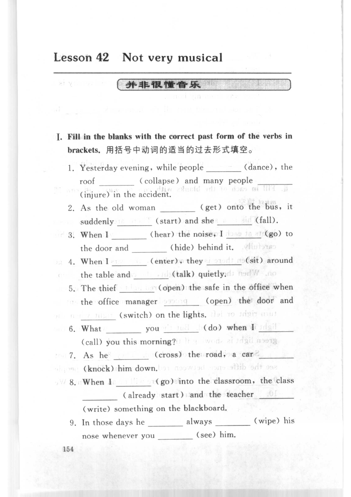
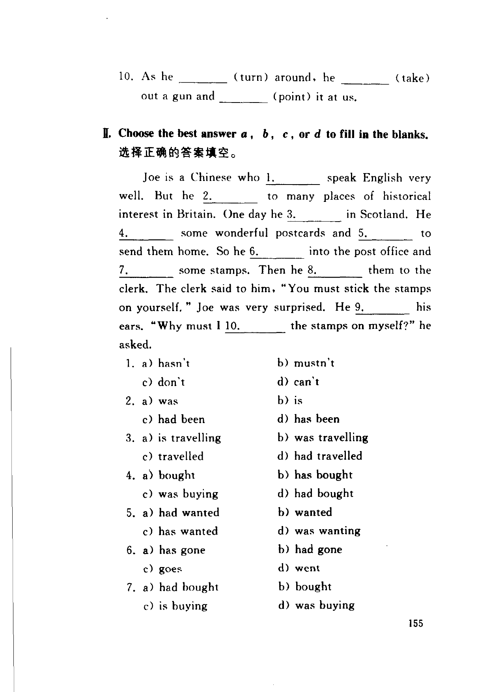
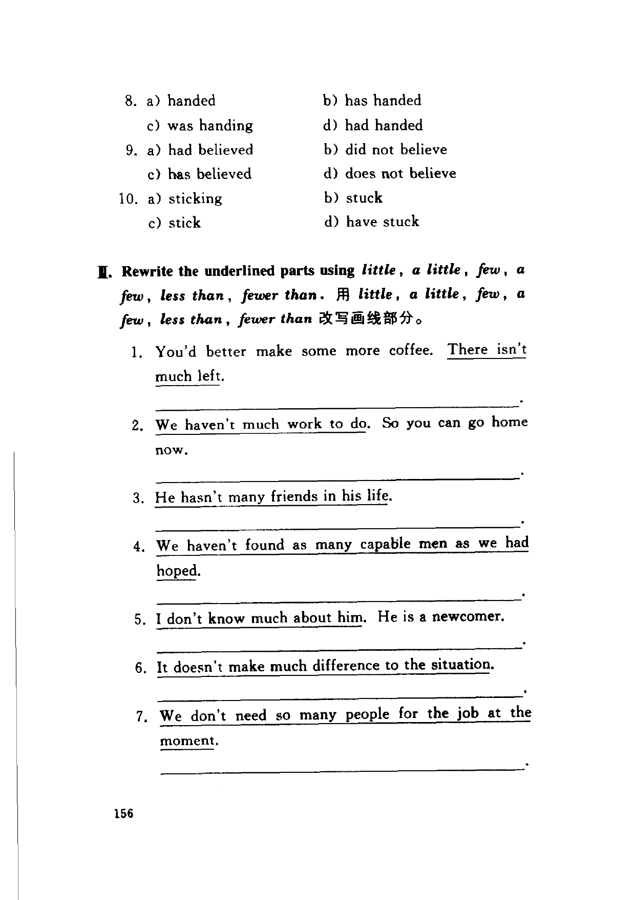
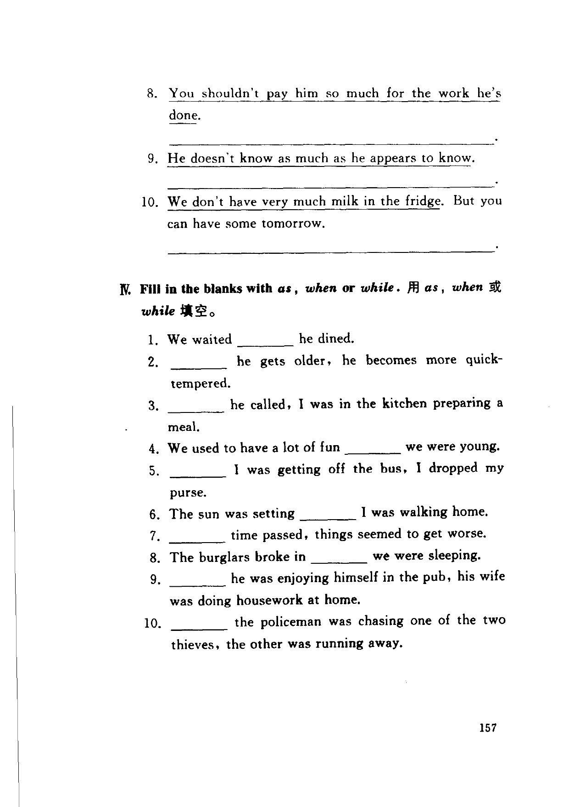

Grammar exercises · 语法练习
I. Fill in the blanks with the correct past form of the verbs in brackets.
用括号中动词的适当的过去形式填空。
-
I. Past forms — Yesterday evening, while people (dance), the roof (collapse) and many people (injure) in the accident.
-
I. Past forms — As the old woman (get) onto the bus, it suddenly (start) and she (fall).
-
I. Past forms — When I (hear) the noise, I (go) to the door and (hide) behind it.
-
I. Past forms — When I (enter), they (sit) around the table and (talk) quietly.
-
I. Past forms — The thief (open) the safe in the office when the office manager (open) the door and (switch) on the lights.
-
I. Past forms — What you (do) when I (call) you this morning?
-
I. Past forms — As he (cross) the road, a car (knock) him down.
-
I. Past forms — When I (go) into the classroom, the class (already start) and the teacher (write) something on the blackboard.
-
I. Past forms — In those days he always (wipe) his nose whenever you (see) him.
-
I. Past forms — As he (turn) around, he (take) out a gun and (point) it at us.
II. Choose the best answer a, b, c, or d to fill in the blanks.
选择正确的答案填空。
-
II. Multiple choice — Joe is a Chinese who
1.speak English very well. But he2.to many places of historical interest in Britain. One day he3.in Scotland. He4.some wonderful postcards and5.to send them home. So he6.into the post office and7.some stamps. Then he8.them to the clerk. The clerk said to him, "You must stick the stamps on yourself." Joe was very surprised. He9.his ears. "Why must I10.the stamps on myself?" he asked.- a) hasn't b) mustn't c) don't d) can't
- a) was b) is c) had been d) has been
- a) is travelling b) was travelling c) travelled d) had travelled
- a) bought b) has bought c) was buying d) had bought
- a) had wanted b) wanted c) has wanted d) was wanting
- a) has gone b) had gone c) goes d) went
- a) had bought b) bought c) is buying d) was buying
- a) handed b) has handed c) was handing d) had handed
- a) had believed b) did not believe c) has believed d) does not believe
- a) sticking b) stuck c) stick d) have stuck
III. Rewrite the underlined parts using little, a little, few, a few, less than, fewer than.
用 little, a little, few, a few, less than, fewer than 改写画线部分。
-
III. little / few — You'd better make some more coffee. There isn't much left.
-
III. little / few — We haven't much work to do. So you can go home now.
-
III. little / few — He hasn't many friends in his life.
-
III. little / few — We haven't found as many capable men as we had hoped.
-
III. little / few — I don't know much about him. He is a newcomer.
-
III. little / few — It doesn't make much difference to the situation.
-
III. little / few — We don't need so many people for the job at the moment.
-
III. little / few — You shouldn't pay him so much for the work he's done.
-
III. little / few — He doesn't know as much as he appears to know.
-
III. little / few — We don't have very much milk in the fridge. But you can have some tomorrow.
IV. Fill in the blanks with as, when or while.
用 as、when 或 while 填空。
-
IV. as / when / while — We waited he dined.
-
IV. as / when / while — he gets older, he becomes more quick-tempered.
-
IV. as / when / while — he called, I was in the kitchen preparing a meal.
-
IV. as / when / while — We used to have a lot of fun we were young.
-
IV. as / when / while — I was getting off the bus, I dropped my purse.
-
IV. as / when / while — The sun was setting I was walking home.
-
IV. as / when / while — time passed, things seemed to get worse.
-
IV. as / when / while — The burglars broke in we were sleeping.
-
IV. as / when / while — he was enjoying himself in the pub, his wife was doing housework at home.
-
IV. as / when / while — the policeman was chasing one of the two thieves, the other was running away.
Original images · 原图对照
Expand a page to compare it with the transcription. Open the original in a new tab to zoom in.
展开原图核对文字，也可以在新标签页打开原图放大查看。
Book page 154 · Exercise I (past forms, items 1–9)
Open original · 打开原图 ↗ Download original · 下载原图


Book page 155 · Exercise I (past forms, item 10) and Exercise II (multiple choice, passage and items 1–7)
Open original · 打开原图 ↗ Download original · 下载原图


Book page 156 · Exercise II (multiple choice, items 8–10) and Exercise III (little, a little, few, a few, items 1–7)
Open original · 打开原图 ↗ Download original · 下载原图


Book page 157 · Exercise III (items 8–10) and Exercise IV (as, when or while)
Open original · 打开原图 ↗ Download original · 下载原图


Your notes and answers
Use this space for longer responses or exercises that do not have an individual answer box.